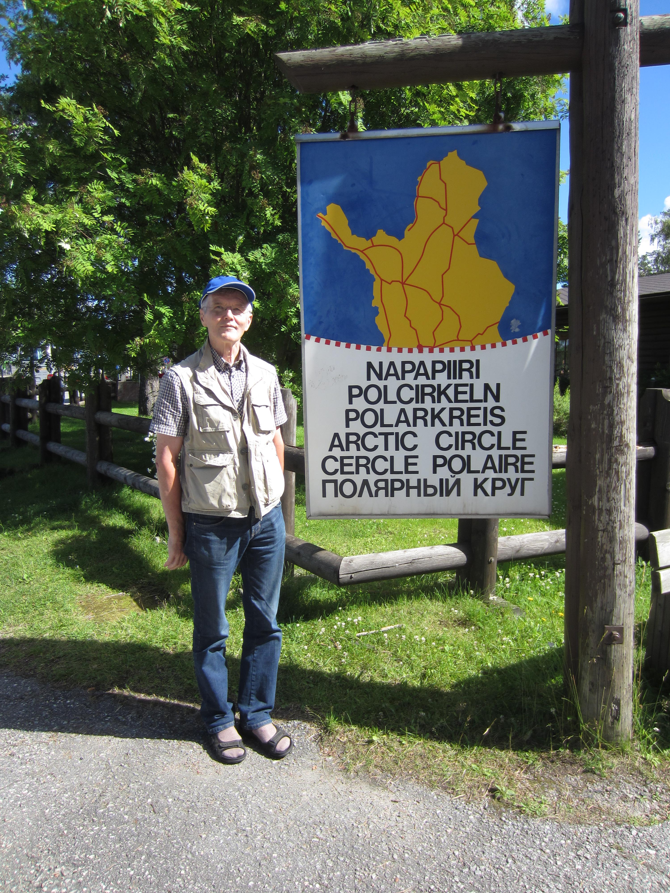

Practical information
Accommodation and Meals
The contestants and leaders will be accommodated on the island Hietasaari. The distance to Oulu center is 3 km walking, somewhat more by car. City bus n:o 15 connects Hietasaari to Oulu center. The service is not very frequent: twice an hour on weekdays at daytime, once an hour on weekends and evenings.
The contestants will be accommodated in the Nallikari Holiday Village,
address Leiritie 10, FIN 90510 Oulu, Finland, telephone +358 44 7031353. The reception and cafeteria are open from 11 to 19 on weekdays, 11 to 16 on holidays.
The leaders’ accommodation is at Pohto Institute, Vellamontie 12, FIN 90510 Oulu, telephone +358 10 843 4500.
Walking distance between the places is about 800 m, using Leiritie, Holstinsalmentie and Vellamontie. Consult map.
Meals will be served at different restaurants, as indicated in the programme. Ruffi is the restaurant at Pohto Institute, in the leaders’ accommodation. Restaurant Nallikari is on the seashore 200 m from the western gate of the Nallikari Holiday Village. On Friday, the contestants will have their breakfast as breakfast packs in the bus en route to Rovaniemi.
Contest Site
The contest will take place in the Oulu University Teacher Training School (Oulun normaalikoulu), Kaitoväylä 7, 90570 Oulu.
Contest Instructions
Any material not permitted in the test, e.g. cell phones and calculating devices, will be collected from the teams before the test and returned afterwards.
Eventual questions pertaining to the problems (i.e. suspected errors, misprints etc) should be made in writing during the first 30 minutes of the test. There will be messengers carrying the questions to the jury.
There will be some refreshments in the working rooms.
Answers to different problems should be written different sheets. Write your country code and problem number on every answer sheet. Only write on one side of paper! Place the answers in the four envelopes provided and marked with the country code and problem numbers. The envelopes will be collected at the end.
Excursions
On Friday, November 4, the Jury will be busy working with the problem set for the contest. Meanwhile, the contestants will make an excursion to Rovaniemi, the capital of Lapland. As distances here are long, the excursion will start so early that breakfast will be consumed in the bus. Of the many interesting sights in Rovaniemi, the contestants will visit the Arktikum science center and Santa Claus Village, just on the Arctic Circle.
On Sunday morning, Nov. 6, the contestants and leaders will visit the Oulu premises of VTT, Technical Research Centre of Finland, to see a glimpse of high-tech Oulu.
Weather
Weather is unpredictable. But anyway, it will be late autumn. We advice you to check the medium term forecast of the Finnish Meteorological Institute before choosing the clothing. And those of you travelling to Rovaniemi may well find the ground covered with snow.
Contact
For more information, contact the organizers. Email: matti.lehtinen’at’spangar.fi, phone +358405830678.